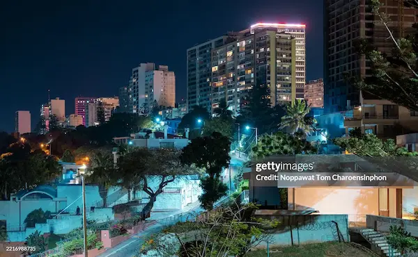

Languages and Community
Portuguese is Mozambique's official language. Many Mozambicans also speak local languages, including Emakhuwa, Xichangana, Elomwe, Cisena, and others.
Language and community traditions help preserve local identity and connect generations.